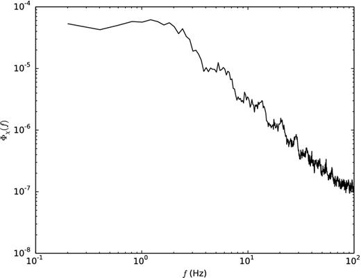

Scyntylacja atmosferyczna i "Seeing"
Migotanie gwiazd to zjawisko polegające na szybkich, nieregularnych zmianach jasności i barwy światła gwiazd widocznych z powierzchni Ziemi. Wynika ono z zakłóceń w atmosferze, które zmieniają kierunek i intensywność promieni świetlnych docierających do obserwatora.
Scyntylacja atmosferyczna – zjawisko migotania gwiazd
Scyntylacja atmosferyczna to fascynujące zjawisko, które bezpośrednio wpływa na jakość obserwacji astronomicznych. Polega na szybkich i nieregularnych zmianach jasności oraz barwy gwiazd widzianych z powierzchni Ziemi. Powodem tych fluktuacji są turbulencje w atmosferze, które zakłócają przebieg fal świetlnych docierających do teleskopów i innych instrumentów obserwacyjnych.
Mechanizm powstawania scyntylacji
Głównym sprawcą scyntylacji są turbulencje atmosferyczne. Atmosfera Ziemi nie jest jednorodnym ośrodkiem – składa się z warstw o zmiennej temperaturze, ciśnieniu i gęstości. Te zjawiska powodują fluktuacje współczynnika załamania światła, co skutkuje odchyleniami promieni świetlnych. Fale świetlne gwiazd przechodzące przez atmosferę ulegają załamaniu i interferencji, co prowadzi do efektów takich jak:
- Zmiany jasności: Różnice w intensywności światła powodowane lokalnym ogniskowaniem i rozpraszaniem promieni.
- Przesunięcia kątowe: Zmiany w kącie docierania światła, prowadzone przez lokalne zmiany współczynnika załamania.
- Zmiany barwy: Krótsze fale światła (np. niebieskie) są bardziej podatne na załamanie niż dłuższe fale (czerwone), co powoduje chwilowe zmiany kolorów gwiazd.

Kluczowe zależności fizyczne
W zrozumieniu i opisie scyntylacji kluczową rolę odgrywają następujące parametry:
- Skala Frieda (ρ₀):
Skala Frieda opisuje rozmiar obszaru w atmosferze, w którym fale świetlne pozostają w przybliżeniu koherentne. Wyraża się wzorem:
ρ₀ ∼ (λ² / Cₙ² ⋅ h)³/⁵
Gdzie:
- λ to długość fali światła,
- Cₙ² to współczynnik turbulencji atmosferycznej,
- h to wysokość atmosfery, w której zachodzą turbulencje.
Im mniejsza wartość skali Frieda, tym silniejsze turbulencje i gorsza jakość obrazu w teleskopie.
- Czas koherencji (τ₀):
Parametr ten definiuje czas, w którym turbulencje atmosferyczne pozostają w przybliżeniu stałe. Wyraża się on jako:
τ₀ ∼ ρ₀ / v
Gdzie v to średnia prędkość warstw atmosferycznych. Krótszy czas koherencji oznacza szybsze zmiany w atmosferze, co utrudnia obserwacje astronomiczne.
Dlaczego scyntylacja jest istotna w astronomii?
Scyntylacja atmosferyczna jest jednym z głównych czynników ograniczających jakość obserwacji z powierzchni Ziemi. Jej wpływ jest szczególnie widoczny podczas obserwacji gwiazd punktowych, które migoczą bardziej intensywnie niż obiekty rozległe, takie jak planety.
Aby minimalizować negatywne skutki scyntylacji, stosuje się zaawansowane technologie, takie jak:
- Optyka adaptatywna: Systemy te kompensują deformacje obrazu w czasie rzeczywistym, wykorzystując lustra o zmiennej geometrii.
- Obserwacje z kosmosu: Teleskopy umieszczone poza atmosferą (np. Hubble) nie są dotknięte scyntylacją, co pozwala na uzyskanie znacznie wyraźniejszych obrazów.
- Lokalizowanie obserwatorów na dużych wysokościach: Budowanie obserwatoriów na górskich szczytach redukuje wpływ scyntylacji, ponieważ teleskopy znajdują się ponad najgęstszą częścią atmosfery.
Podsumowanie
Scyntylacja atmosferyczna to nieuniknione zjawisko wynikające z natury atmosfery Ziemi. Choć może stanowić przeszkodę dla astronomów, zrozumienie jej mechanizmów umożliwiło opracowanie nowoczesnych technologii, które pozwalają na uzyskanie wyraźnych i precyzyjnych obrazów kosmosu. Właśnie dzięki tym technologiom możemy cieszyć się niezwykłymi odkryciami, jakie oferuje współczesna astronomia.
.jpg)
Zorza Polarna
Mechanizm Powstawania Zorzy Polarnej
Słońce emituje strumień naładowanych cząstek, głównie protonów i elektronów, zwany wiatrem słonecznym. Gdy te cząstki docierają do Ziemi, większość z nich jest odchylana przez pole magnetyczne naszej planety. Jednak część z nich wnika w magnetosferę i jest kierowana w stronę biegunów magnetycznych.
Energia kinetyczna tych cząstek jest transferowana do atmosfery podczas kolizji z atomami i cząsteczkami tlenu oraz azotu. W wyniku tych interakcji dochodzi do wzbudzenia cząsteczek, a następnie emisji fotonów podczas deekscytacji:
E = h \nu
Gdzie:
- E – energia emitowanego fotonu,
- h – stała Plancka,
- \nu – częstotliwość promieniowania.
Rola Rekoneksji Magnetycznej
Rekoneksja magnetyczna to proces, w którym linie pola magnetycznego o przeciwnych zwrotach łączą się, uwalniając przy tym ogromne ilości energii. W kontekście zorzy polarnej, rekoneksja zachodzi w magnetosferze Ziemi, zwłaszcza w tzw. ogonie magnetosfery, po nocnej stronie planety.
Matematycznie, energia uwolniona podczas rekoneksji jest proporcjonalna do intensywności pola magnetycznego i objętości regionu rekoneksji:
U = \frac{B^2}{2 \mu_0} \cdot V
Gdzie:
- U – energia uwolniona w procesie rekoneksji,
- B – natężenie pola magnetycznego,
- \mu_0 – przenikalność magnetyczna próżni,
- V – objętość obszaru rekoneksji.
Kolory Zorzy
Barwa zorzy zależy od rodzaju atomów i wysokości, na której zachodzi emisja:
- Zielona zorza: najczęściej obserwowana, pochodzi z emisji atomów tlenu na wysokości około 100 km.
- Czerwona zorza: rzadsza, również związana z tlenem, ale na wysokościach powyżej 200 km.
- Fioletowa i niebieska zorza: wynikają z emisji atomów azotu.
Znaczenie Badań nad Rekoneksją Magnetyczną
Zrozumienie mechanizmów rekoneksji magnetycznej ma kluczowe znaczenie nie tylko dla prognozowania zórz polarnych, ale także dla przewidywania tzw. pogody kosmicznej. Burze magnetyczne wywołane rekoneksją mogą wpływać na działanie satelitów, systemów komunikacji oraz sieci energetycznych na Ziemi.
Podsumowanie
Zorza polarna jest nie tylko pięknym widowiskiem, ale także manifestacją skomplikowanych procesów fizycznych zachodzących w przestrzeni kosmicznej. Rekoneksja magnetyczna odgrywa kluczową rolę w jej powstawaniu, ukazując dynamiczną interakcję między Słońcem a Ziemią. Dzięki badaniom naukowym, możemy lepiej zrozumieć te zjawiska i przewidywać ich wpływ na nasze codzienne życie.